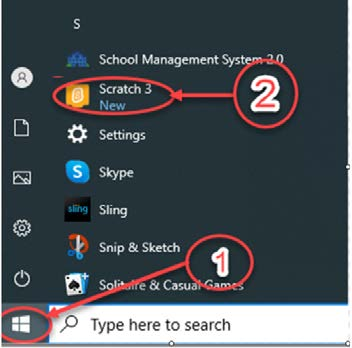
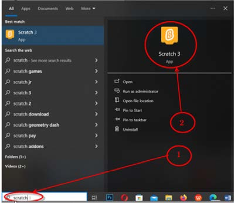

Opening the Scratch/Quorum program
Follow the steps provided in Activity 5 to open the Scratch/Quorum program.
Activity 5
Opening the Scratch/Quorum program
Steps
To open Scratch/Quorum, you can use one of the options in Figure 18.
1. Click/press on the ‘Windows button’ as shown/identified in Figure 18(a).

(a) If Scratch/Quorum is in the list of programs

(b) If Scratch/Quorum is not in the list of programs
Figure 18: Opening a Scratch/Quorum program
2. Select the Scratch/Quorum program and click/press to open it as shown/identified in Figure 18(a). If Scratch/Quorum is not in the list of programs, type the word ‘Scratch’/Quorum in the search as shown/identified in Figure 18(b).
3. Click/press ‘Scratch’/Quorum to open it as shown/identified in Figure 19.